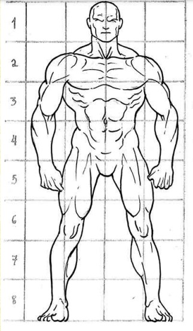
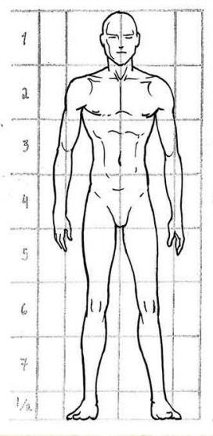
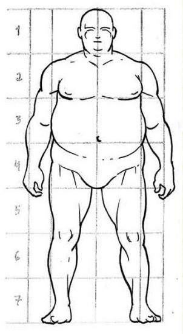

A fase de reflexão é importante antes de desenhar sua primeira tira e pintar suas placas de HQ. Ao contrário de um único desenho, uma revista em quadrinhos é uma revista ou livro que conta uma história. Então, você deve determinar vários elementos antes de começar o seu quadrinho, que pode ser definido como uma novela gráfica:
Ok, mas como criar o desenho dos personagens?

1º passo: a imaginação. Antes de lhes dar vida na folha, seus personagens tomarão forma em sua mente.
2º passo: O artista não pode ser conformar em desenhar apenas de um jeito. Para que ele amadureça e se torne versátil, e principalmente se quer se profissionalizar, é necessário aprender a desenhar diferentes tipos de figuras.
Tradicionalmente, são três os tipos básicos de personagens que podemos encontrar nas histórias em quadrinhos, animações ou games: Muscular, Cerebral e Digestivo.
Tipo Muscular
É a figura do herói clássico, com ombros largos, boa postura e peitoral estufado. É uma figura imponente, muito utilizada para representar heróis e deuses. É o tipo mais comum nos comics. Geralmente tem o queixo quadrado e uma mandíbula poderosa

Tipo Cerebral
É figura mais magra, franzina. Pode ter a postura um pouco curvada para frente. Pode representar um intelectual ou alguém mais ágil e rápido. A cabeça pode ser alongada, o nariz comprido e os lábios finos.

Tipo Digestivo
É a figura mais gorda, geralmente representada com a barriga grande, os braços grossos e as pernas um pouco mais curtas em relação ao corpo. Geralmente possui uma papada e o pescoço curto. A figura digestiva pode também estar associada a um personagem muito mais forte e/ou muito mais alto que o comum.

A maioria dos desenhistas faz primeiro um esboço do seu desenho, e depois vai ajustando os traços para ficar mais bem feito. Quanto mais experiente o desenhista, mais esse esboço é solto, decidido e semelhante a um desenho finalizado em sua forma geral.
Mas para quem ainda não tem um conhecimento aprofundado, é muito útil simplificar a figura em algumas formas básicas.
Você não precisa ser um mestre do desenho para criar personagens que sejam interessantes, carismáticos, divertidos, assustadores ou de qualquer jeito que você quiser.
BORA PRATICAR E ATÉ A PRÓXIMA!!